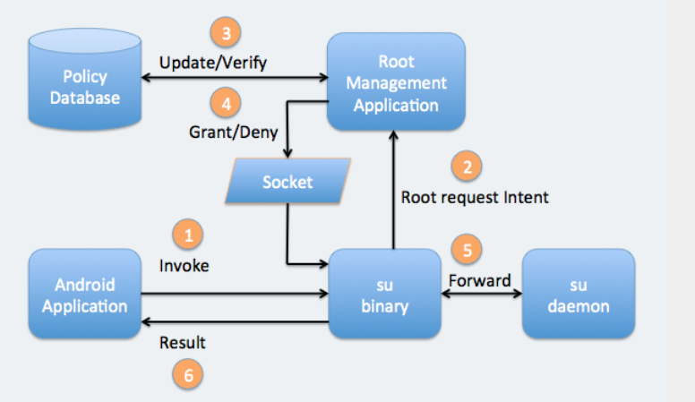

Android-Root总结
前言
Root介绍
什么是Root
root在linux中是超级管理员的意思，我们常说的获取root其实就是获取系统最高权限的意思。那为什么我们要获取系统的最高权限呢？最开始是因为某些手机厂商联合运行商，在手机中预装了许多烦人的应用来打造一个封闭的生态圈，并且一般用户是没有权限卸载这些应用的，强制用户使用这些应用。后来为了让手机用户摆脱厂商的这种限制，有人就搞出了对手机进行root的工具。通过这类工具可以获取系统最高权限，让被root后的手机用起来更舒服，更自由。比如卸载手机内置的烦人的软件，禁止开机启动项，实现对手机的各种定制化，在手机空间较小的情况下还可以用来优化手机。但是这些应用在方便了用户的同时也为病毒制作者开了一扇窗，对于被root后的手机病毒可以做的各种不可告人的操作也变得更多。因此各个手机厂商和Google就对android添加了各种保护机制和检测方法，避免手机被root。导致现在想要获取手机root远没有之前那般容易了。当然现今一些手机厂商也会内置root权限的开关，不过对于现在的手机远比以前的手机内存大，运行速度快所以国内root的需求也没有以前那么大了，现在对手机root可能更多是为了满足病毒，取证方面的需求吧。不过像国外的一些国家和我们几年前的情况差不多，目前还存在一定的手机root需求的。

上图为root工具工作原理
如何获取Root
目前我们比较常用的获取root方法有通过刷机获取，通过漏洞利用获取，一般刷机获取的话可能需要清空当前设备的数据在某些情况下存在局限性，所以最好就是利用漏洞去获取系统最高权限当然难度更高，然后在高权限下替换或添加权限管理程序也就是我们常说的su，比较常用的su程序包括SuperSU，Magisk。个人感觉Magisk比较好用。
常见的提权操作
通过漏洞进行提权常规的套路就是利用一个低权限进程利用漏洞直接获取高权限，方法很多可以通过修改这个低权限进程内核中的关键结构体，或者直接调用内核提供的权限提升函数(commit_creds(prepare_kernel_cred(0)))，这种方法可能有时候需要patch内核代码(比如利用setreuid函数接口时)，又或者替换内核代码把内核在某种情况下要启动的可执行文件的路径改为我们自定义的路径(hotplug利用：ls -l /proc/sys/kernel/hotplug)，还有就是通过修改系统配置文件进行提权比如bootloader漏洞提权，以及利用漏洞替换系统文件进行提权DirtyCow的一个实例。在无法通过低权限提升到高权限的情况下我们也可以把目标转到已经存在高权限的进程中，通过这些高权限进程的漏洞，依然可以获取root权限。
临时root和永久root
root还分为永久root和临时root，临时root就是在提权成功直到系统关机这段时间拥有root权限，每次系统重启后都需要重新进行提权。主要是Android4.4以及更高版本的系统在启动时内核会使用dm-verity功能进行验证启动，验证原理是最开始会建立一条从受硬件保护的信任根到引导加载程序，再到启动分区和其他已验证分区(system,vendor和可选的OEM分区)的完整信任链(加密散列树)。设备在启动时进入下个阶段之前会先校验下个阶段的完整性和真实性。这样就有效阻止了提权时植入的拥有持久Root权限的Rootkit。
除了有系统完整性检查以外还内置了回滚保护机制，避免攻击者回滚到之前存在漏洞的系统进行攻击。存在回滚保护的设备只会更新到更高的Android系统。实现原理就是使用防篡改的存储空间记录最新一次android版本的信息。并在Android版本低于记录的版本时拒绝启动Android。
加密散列树的原理就是把数据按4k为一块，树中每个节点都是加密hash，其中叶节点包含物理数据块的hash，并且中间节点包含其子节点的hash。因为根节点中的哈希是基于所有子节点的值，所以只有根节点被信任才能验证树的其余部分，对于任何一个节点块的修改都会破坏整个加密hash。
缓解措施
一些root的检测方法
下面列出一些用来检测手机是否被root的方法，都是一些比较简单的检测，存在各自的缺点，没有通用的检测方法，还是需要根据实际情况灵活使用。
检查是否存在权限管理应用
123456789101112131415手动检查：ls -l /system/app/Superuser.apkpm list packages | grep eu.chainfire.supersupm list packages | grep magisk自动检查：public static boolean checkSuperuserApk(){try {File file = new File("/system/app/Superuser.apk");if (file.exists()) {Log.i(LOG_TAG,"/system/app/Superuser.apk exist");return true;}} catch (Exception e) { }return false;}检查是否存在不需要的二进制文件，路径可能不一致。
12345678910111213141516171819202122手动检查：ls -l /system/bin/su /system/xbin/suls -l system/su /system/bin/.ext/.suls -l /system/usr/we-need-root/su-backupfind / -name "*su*" 2>/dev/null /*搜索根目录下所有文件，列出名字带su的文件路径*/自动检查：public static boolean checkRootPathSU() {File f=null;final String kSuSearchPaths[]={"/system/bin/","/system/xbin/","/system/sbin/","/sbin/","/vendor/bin/"};try{for(int i=0;i<kSuSearchPaths.length;i++) {f=new File(kSuSearchPaths[i]+"su");if(f!=null&&f.exists()) {Log.i(LOG_TAG,"find su in : "+kSuSearchPaths[i]);return true;}}}catch(Exception e) {e.printStackTrace();}return false;}检查shell权限的id
12id | grep rootps | grep adbd | grep root检查文件系统的读写属性是否被更改(RW等)
123456手动检查：bullhead:/ $ mount | grep system/dev/block/mmcblk0p41 on /system type ext4 (ro,seclabel,relatime,inode_readahead_blks=8)/dev/block/mmcblk0p41 on /sbin/.core/mirror/system type ext4 (ro,seclabel,relatime,inode_readahead_blks=8)ls -lR /system | grep -e :$ -e [r-][w-]xls -laR /system | grep [r-][w-]s[-r' ']
检查当前设备使用的是否为自定义内核，通过设备的ro.build.tags值来区分”test-keys”表示测试版，”release-keys”表示发布版，当然这种方法也可能误报。
开源的Root检查项目：
检测Rooot项目-RootBeer
反检测Root项目-Rootcloak
内核层的缓解措施
内核版本3.4：
- mmap_min_addr(zero-page restrict)：限制mmap函数可映射的最低地址：缓解机制：因为没有对mmap地址范围做任何限制，应用层可以映射0页面，null pointer deref漏洞当时就是利用这个机制进行提权，后期针对这种漏洞推出了mmap_min_addr线程，限制mmap可以映射的最低地址，目前null pointer deref漏洞只能做一般的dos攻击
Kernel Address Display Restriction/dmesg restrictions：由于之前常用提权套路是从/proc/kallsyms搜索符号commit_creds和prepare_kernel_cred的地址，然后在用户态通过这两个符号构造提权函数，接着利用漏洞改写某个内核函数指针，将其函数指针替换为前面构造的提权函数，最后在用户态调用被改写的fsync函数，这样内核就直接执行用户态的提权函数完成提权，后期内核推出了该机制使得默认配置下无法从/proc/kallsyms等接口获取内核符号的地址
123456/proc/sys/kernel/dmesg_restrict/proc/sys/kernel/kptr_restrict选项:用来过滤一些地址，以此避免将内核地址泄漏给攻击者，通过配置kptr_restrict的值来控制是否开启:* 0:完全禁止* 1:使用"%pk"打印的内核指针被隐藏(以0替换)，除非用户存在CAP_SYSLOG权限。* 2:所有内核使用"%pk"打印的都被隐藏SEAndroid(MAC)：强制访问控制，比常规自主访问控制(DAC)粒度更细
内核版本3.10~3.18：
- 页面权限限制
- 内核代码段不可写(R-W)
- 内核数据段不可执行(R– or RW-)
- PXN(Privilege Execute Never)：主要是用来防止内核态执行用户态代码，因为之前的漏洞利用方式是直接劫持内核执行流到用户态的shellcode进行提权，通过该机制有效保护了内核的执行范围。
- RKP(内核实时保护，三星KNOX保护)
内核版本4.4+：
- Post-init read-only：主要用来限制利用vdso布置shellcode的措施，由于之前vdso区域可写，所以有些漏洞利用就通过patch掉这块内存把恶意代码布置到这块内存上来实现shellcode的执行。该机制通过在内核初始化后把该内存区域标记为只读来扩展内核中的现有内存保护。
- Hardened usercopy：之前许多漏洞都是因为在使用copy_user时边界检查不严造成的，所以开发人员干脆直接在copy_user类函数内部添加了对拷贝位置和拷贝长度的检查。
- PAN(Privileged Access Never)：其主要作用就是防止内核态去访问用户态的数据，成功防止了一些用于绕过PXN机制的技巧，让利用漏洞的难度加大。
- KASLR：因为漏洞利用时内核地址十分重要，所以把内核地址变为随机地址会大大增加漏洞利用难度，原理就是在bootloader启动kernel的时候，会通过FDT向内核传入一个seed，在内核启动过程中，kaslr_early_init函数利用这个seed计算出一个random size，然后内核每次加载的基址都会默认在原基址上加上random size。
- Integer Overflow Sanitization(整数溢出排除)：一种基于编译器的安全缓解措施，针对算术运算/指令(可能溢出)的检查，以便在实际发生溢出时安全终止进程，该类排错程序可以减少整数溢出导致的各种内存损坏和信息泄露。
- Control Flow Integrity(控制流完整性)：一种基于编译器的安全缓解措施，避免攻击者利用漏洞时使用代码复用技巧(ROP/JOP)，控制流完整性实现了将原始程序的控制流限制在编译时确定的有效目标的调用图中。跳转之前先验证下目标地址是否为合法的地址，否则内核崩溃。
感觉最好的缓解机制还是减少攻击面和增加访问控制：减少攻击面的好处让攻击者在受限的范围内寻找漏洞，增加访问控制后(SELinux，DAC权限控制，Capabilities)使大多数漏洞在利用时都受到了限制，无法直接进行提权。
解决问题最好的办法就是解决提出问题的。
缓解措施绕过技巧
Kernel Address Display Restriction/dmesg restrictions:
1.利用信息泄露漏洞获取内核地址
2.通过直接在内存空间搜索kptr_restrict地址，关闭Kernel Address Display Restriction
2.1:在kernel\sysctl.c文件中存在对kptr_restrict的sysctl结构体初始化操作，我们可以通过内存遍历获取到kptr_restrict符号的地址，然后修改为0，这样就关闭了kptr_restrict保护机制SEAndroid：
1.selinux_enforcing,selinux_enable设置为0直接关闭
2.修改reset_security_ops()RKP(内核实时保护机制-三星设备KNOX保护)
1.Bypassing KNOXPXN(Privilege Execute Never):
1.使用rop/jop等代码重用技巧绕过PXN，改写addr_limit的值，破除本进程的系统调用access_ok校验，实现对内核的任意读写。
2.Ret2dir/Physmap：通过把shellcode布局到合规的地址，从而进行提权。Kaslr：利用信息泄露类漏洞
- PAN：任意读写类漏洞可绕过PAN保护。
- CFI：*
一些攻击面
- 常规攻击面包括浏览器，系统自带服务，第三方应用程序，应用升级相关：某些应用在升级时未对下载的升级包做验证，攻击者就可以替换官方升级包为恶意应用，这样最终安装的就是攻击者指定的应用，工程模式， USSD指令：使用手机拨号输入一些预先制定的数字或者符号比如*#等，可能触发一些手机设备预留的后门操作。媒体和文档处理：一些应用在对文件处理时可能考虑的不够完善，导致处理一些畸形文件时出现问题。
- 无线通信相关GPS，基带，蓝牙，Wi-Fi，NFC。
- 本地的攻击面有linux系统调用，网络套接字协议，进程间的通讯，进程间内存共享以及第三方硬件驱动，bootloader。
- 物理攻击面有直接对设备进行拆解以后，可能存在暴露的串口允许接受调试信息，暴露的JTAG调试端口允许对设备进行调试。
漏洞相关
最后来看两个比较有趣的提权漏洞的利用细节，首先是我们如何获取最新的漏洞信息，接着是拿到了漏洞以后如何确定漏洞是否可以利用，在可以利用的情况下如何利用，帮助大家构建一个学习Android漏洞的系统体系。
分析漏洞流程
获取漏洞信息
漏洞的获取
对于漏洞的获取可以关注一些公众号比如玄武实验室的每日公告，天融信阿尔法实验室的每日公告，还有许多公众号都不错。但是一般这些公众号都会在固定的时候发。一般如果出了比较厉害的漏洞或一些新技术都会很快在各大社交应用中传播，所以平时我们还可以多关注一些国内外大佬的推特，微博，还有就是每个月的Google的Android安全公告。
如果我们想早于别人之前获取漏洞信息那么我们可以关注一些首发网站，比如bugs.chromium.org这网站我感觉挺不错的，会公布一些漏洞细节，并且还挺详细。还有Android内核补丁网站和Linux内核补丁网站获取最新的补丁信息，可以通过补丁信息推测出一些相关类型的漏洞或者通过补丁分析获取一些被偷偷修补了的洞。
最后就是通过结交一些相关领域的朋友组成自己的小圈子，很多消息都在一些小圈子中飞，提高自己的信息获取能力。
通过crash log定位内核异常
当我们有了该漏洞的poc以后我们可以找一个测试机，然后在测试机上跑一下看能否崩溃，如果可以崩溃接下来就去获取崩溃日志，然后分析崩溃日志根据日志定位到崩溃代码的位置，也有可能崩溃的地方与实际漏洞的位置不在一处或者多次运行崩溃的地址都不一样，这就需要根据实际的情况详细分析了，对于内存相关的漏洞我们可以使用开启了KASAN选项的测试机，这样崩溃时内核给我们的信息会更多一些。
常见的几个崩溃日志文件
cat /sys/fs/pstore/console-ramoops
cat /proc/last_kmsg
cat /proc/kmsg获取内核函数的地址
echo 0> /sys/fs/selinux/enforce
echo 0 > /proc/sys/kernel/kptr_restrict
cat /proc/kallsyms |grep ptmx_fops
漏洞分析方法
静态分析->解包固件并分析内核
内核镜像分析
获取固件的方式分为两种一种是在网上找相应版本的固件包获取镜像，一种是直接dump当前手机的内核镜像。由于第二种需要root权限，所以第一种最方便也最简单，但是这里主要说下第二种，首先我们需要一个带root的手机，通过adb shell连接手机，然后使用以下命令把手机中包含内核的镜像dump出来，路径可能不一样，一般都在/dev/block/platform/目录下，多找几层就能看到。
OK，可以看到我们成功dump了boot进行，但这不是我们最终的内核，我们还需要使用linux下的abootimg工具对该镜像做解包处理才能获取我们最终的镜像。命令如下
该命令会把我们dump出来的boot.img解包，会生成几个文件，我们只需要其中的zImage文件就行，它有时候是一个zip包，直接通过解压工具就能解开，解开以后我们把最终的内核丢到IDA中直接就可以分析了。
通过前面我们定位到的崩溃地址和获取的函数符号地址，就可以在IDA中分析当时内核执行时上下文了。
源码分析
我们还可以使用SourceInsight进行内核的源码分析，分析源码之前我们首先需要下载源码Android官方源码，然后再创建一个SourceInsight项目把前面下载的源码导入到该项目中即可，导入后可能需要一些时间同步函数之间的调用关系，要不了多长时间。感觉SourceInsight用来读源码还是挺好用的。还有一个understand工具用来分析源码也挺方便的，它可以列出目标函数的调用栈，在写poc的时候挺好用的。
动态分析->GDB调试模拟器
动态调试大概流程如下：
1.首先我们需要创建一个emulator模拟器，然后启动该模拟器，获取该模拟器的内核版本。
2.确定内核版本以后就去下载相应的android内核，并编译该源码。
3.内核编译完毕后使用我们编译的内核去启动第一步的模拟器。
4.启动成功后内核会暂停等待GDB连接，注意在连接内核之前先用GDB加载前面编译出来的vmlinux，这样才能实现对源码的调试。
5.开始GDB单步调试
提权漏洞实例讲解
CVE-2017-7533
CVE-2018-9568
总结
“With great power comes great responsibility” — Uncle Ben Parker
参考
android系统完整性校验
检测root的方法
防护机制文章
https://lwn.net/Security/Index/
Linux内核自防护项目的初始文稿
Android O 内核加固与缓解机制
深入理解SELinux SEAndroid
Android 内核控制流完整性
Android O
Android P
Control Flow Integrity in the Android kernel
绕过相关文章
给shellcode找块福地-通过VDSO绕过PXN
Android PXN绕过技术研究
PXN防护技术的研究与绕过
Android Kernel Security
Author: Let_go
Link: http://github.com/2019/05/07/Android-Root总结/
Copyright: All articles in this blog are licensed under CC BY-NC-SA 3.0 unless stating additionally.